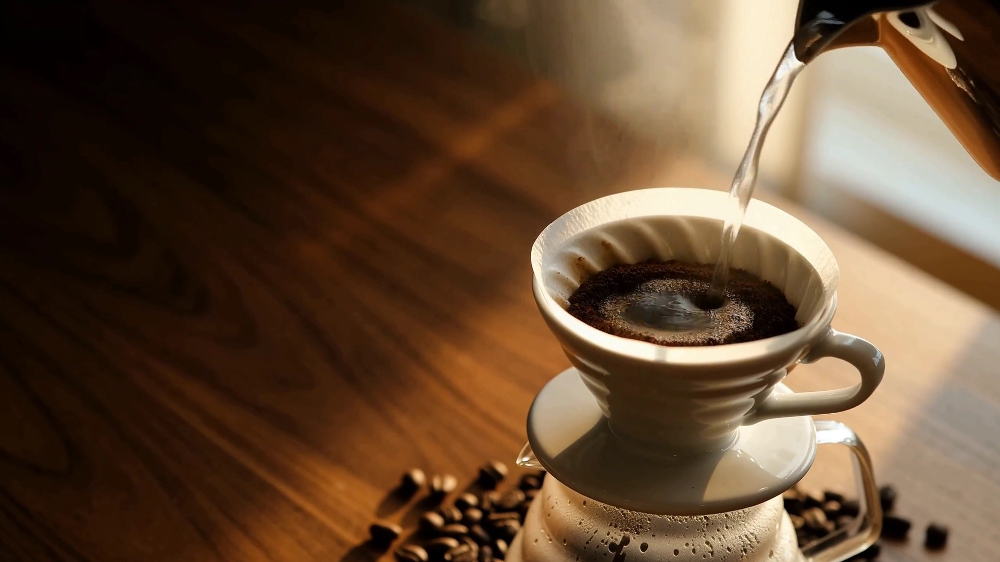

手冲入门课
从器具到手法，完整走一遍手冲流程。零基础也能在两小时内，冲出一杯稳定好喝的咖啡。

BREW · LEARN · ENJOY根据冲煮方式调整粗细。手冲推荐中细研磨，像细砂糖的颗粒感。
用电子秤精确计量。粉水比是风味稳定的关键，别凭感觉。
先闷蒸 30 秒，再分两段绕圈注水。保持水流细而稳定。
让水自然滴滤完毕。总时间控制在 2 分 30 秒左右。

00:00 闷蒸注水 30g，静置 30 秒让咖啡排气。
00:30 由内向外绕圈注水至 150g。
01:30 第二段注水至 225g，等待滴滤完成。
02:30 移开滤杯，轻轻摇晃分享壶，即可享用。
小班教学，咖啡师手把手带你，把爱好变成一项真正的技能。
从器具到手法，完整走一遍手冲流程。零基础也能在两小时内，冲出一杯稳定好喝的咖啡。
用杯测的方式，认识酸、甜、苦与香气。建立属于自己的风味词汇，喝得明白，也说得出来。
六支不同产地的豆子盲测，和同好一起分享判断。在比较中，找到自己真正喜欢的风味。